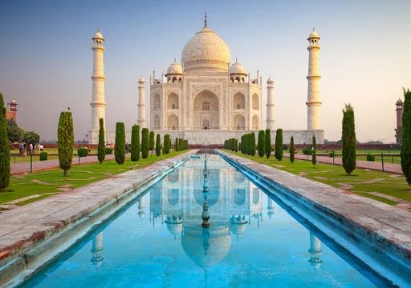

Taj Mahal
El Taj Mahal es un mausoleo de mármol blanco construido en la ciudad india de Agra.
Detalles
El Taj Mahal es un mausoleo de mármol blanco construido en la ciudad india de Agra por el emperador Shah Jahan en memoria de su esposa favorita, Mumtaz Mahal. El complejo del Taj Mahal está diseñado con una simetría casi perfecta, lo que lo convierte en un ejemplo sobresaliente de arquitectura mogol. Los extensos jardines que rodean la estructura principal están divididos en cuadrantes geométricos y están adornados con estanques y senderos. Es considerado el más bello ejemplo de arquitectura mogol y un símbolo de amor eterno.
Datos Curiosos:
- El Taj Mahal está decorado con incrustaciones de piedras preciosas y semipreciosas, como jade, lapislázuli, turquesa, coral y amatista.
- El Taj Mahal cambia de color dependiendo de la luz del día, adquiriendo tonos rosados al amanecer, blancos brillantes al mediodía y dorados al atardecer.
- Se necesitaron aproximadamente 20,000 trabajadores para construir el Taj Mahal, incluyendo artesanos, albañiles, joyeros y carpinteros.